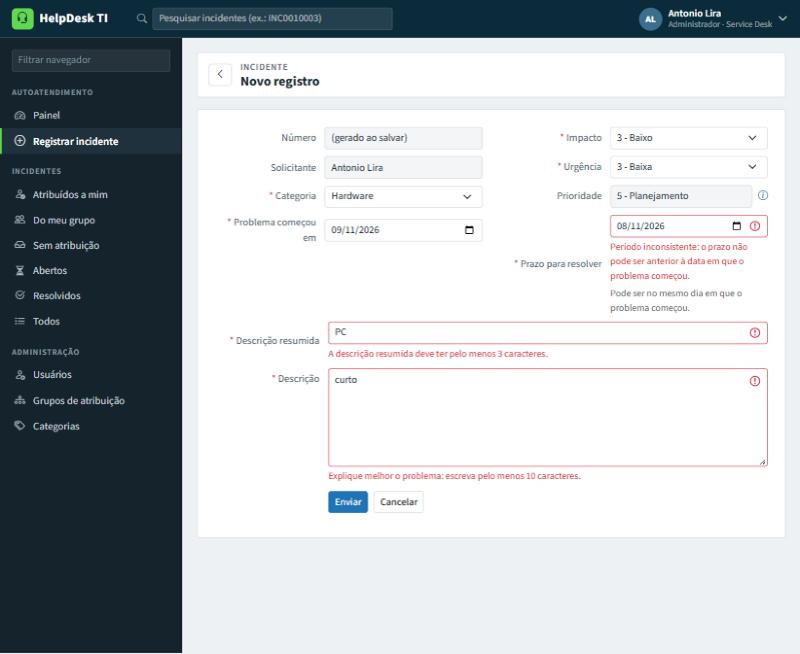

ANTES usuário "A" / "a@b" foi gravado

DEPOIS dados errados recusados pelo servidor

Cadastro de usuários (novo, editar e "Cadastre-se") e Registro de incidente (novo e editar). Antes, os dois aceitavam dados inconsistentes. Agora o Laravel valida no servidor e nada errado é gravado; o JavaScript só ajuda com máscaras e avisos na hora.
| Campo | ANTES | DEPOIS — regra no servidor |
|---|---|---|
| Cadastro de usuários | ||
| Nome | Aceitava "A" | 3 a 100 caracteres; recusa só espaços; remove espaços sobrando |
| Aceitava "a@b" | Formato completo (nome@dominio.com); único; minúsculas | |
| 2.1 Data de nascimento | Não existia | Data real (recusa 31/02); não futura; 18 anos completos; idade máxima 100 |
| 2.2 CPF | Não existia | Com ou sem máscara; 11 números; dígitos verificadores; recusa 111.111.111-11; único |
| CEP | Não existia | 12345678 ou 12345-678; só números no banco |
| Celular | Não existia | DDD + 9 dígitos, começando com 9; com ou sem máscara |
| Registro de incidente | ||
| Descrição resumida | Aceitava "x" | 3 a 100 caracteres; recusa só espaços |
| Descrição | Aceitava "a" | Mínimo de 10 caracteres |
| Problema começou em | Não existia | Data real; não pode ser futura |
| Prazo para resolver | Não existia | Não pode ser antes do início ("Período inconsistente"); pode ser o mesmo dia; selo "Atrasado" quando vence |
php artisan test → 93 testes aprovados (470 verificações): 48 do usuário, 28 do incidente e os 17 que já existiam. Cada caso foi testado na inclusão e na alteração. Exemplos:
| Campo | Valor testado | Resultado |
|---|---|---|
| CPF | 529.982.247-25 e 52998224725 | Aceito; gravado 52998224725 |
| CPF | 529.982.247-26 / 111.111.111-11 | "O CPF informado é inválido." |
| Data de nascimento | 10/11/2008 (18 anos hoje) | Aceito (limite) |
| Data de nascimento | 11/11/2008 (18 amanhã) | "É preciso ter pelo menos 18 anos completos." |
| Data de nascimento | 31/02/2000 | "Informe uma data … que exista no calendário." |
| CEP / Celular | 1234-5678 / 11887654321 | Formato do CEP / "deve começar com 9" |
| Nome | só espaços / Al | Obrigatório / "pelo menos 3 letras" |
| Período | início = prazo = 10/11/2026 | Aceito (período de um dia) |
| Período | início 09/11, prazo 08/11 | "Período inconsistente…" |
| Problema começou em | 11/11/2026 (amanhã) | "Não pode ter começado numa data futura." |
À direita: formulário enviado sem passar pelo JavaScript (nome curto, e-mail incompleto, 16 anos, CPF com dígito errado, celular sem o 9, CEP com 7 números). O Laravel recusou todos, com uma mensagem para cada erro.


À direita: prazo (08/11) antes do início (09/11), título "PC" e descrição "curto", enviados direto ao servidor. Nenhum incidente foi criado.
| Identificar o formulário · Implementar as regras | ✔ Usuário (7 campos) e incidente (4 campos) |
| Mensagens claras e específicas | ✔ Uma por tipo de erro, em português |
| Impedir gravação de dados inválidos | ✔ Comprovado nos prints e nos testes |
| Validar na inclusão e na alteração | ✔ Mesmas regras nos dois casos |
| Validação no servidor (PHP/Laravel) | ✔ UsuarioRequest, ChamadoRequest, Rules\Cpf |
| JavaScript como complemento | ✔ public/js/validacao.js (máscaras e avisos) |
| Testes válidos, inválidos e limites · Documentação | ✔ 76 testes novos · este documento |